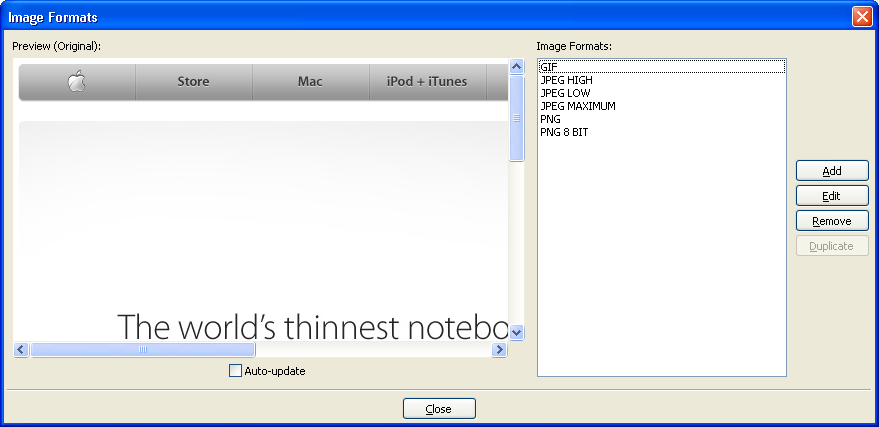
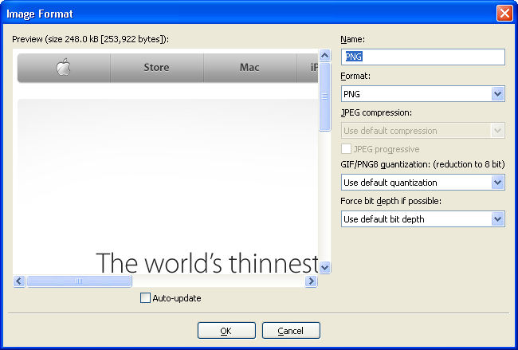
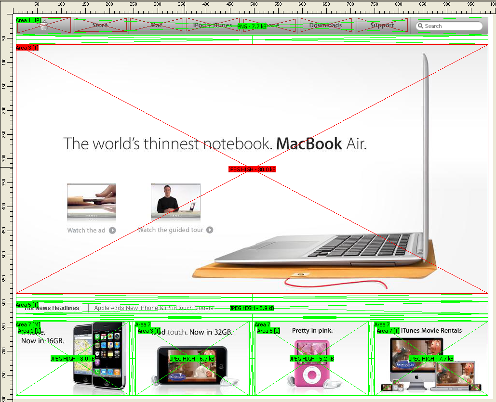
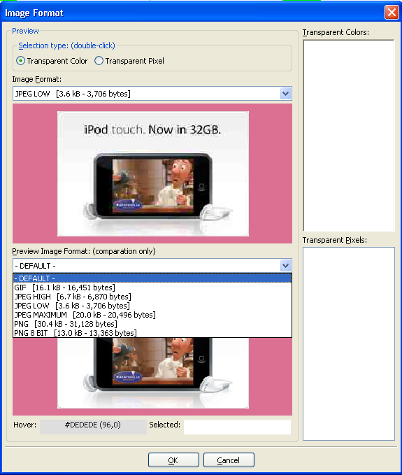

In HTMLButcher, you can define any number of image formats that will be used in your site.
The most common ones, like GIF, JPEG HIGH, PNG, are defined by default, but you can change them or add new ones as you like.
To configure image formats, open or create a new project, and then go to the menu Data -> Image Formats.

On this screen, you have a preview image at left, and the list of image formats at right. If the "auto-update" checkbox is checked, as you click
on an image format the image will be converted to the selected format on the preview window.
Select the "PNG" image format, and click "Edit.

On this screen, you can choose format, compression, quantization and force bit depth.
Compression only applies the JPEG format, you can change the JPEG quality param using this selection. Also use the checkbox to select a
progressive JPEG if desired.
Quantization is the algorithim used to convert an image from true color to 8 bit palletized, so is only used on 8 bit image formats (GIF or PNG8).
NewQuant generates better images, but is slow. Xialon Wu, is faster, but not as accurate as NewQuant. NewQuant is the default, and should be used
in most cases.
Force bit depth is used to force a specific (or minimum) bit depth for image formats that support other bit depths. If the image format can't
handle this bit depth, the next HIGHER bit depth will be used instead, if possible, otherwise the next lower bit depth will be used.
GIF only supports 8 bit, and JPEG on 24 bits, so only PNG is affected by this parameter. The default bit depth is the bit depth of the original
image file, so if the layout image is 24 bits and you want to create an 8 bit image format, select 8 bit on this selection box.
When you are slicing your site, you can see inline how the images will be like with the selected image format. To see this, select the menu
View -> Preview (or press Ctrl-V). The site areas will show the images converted to the selected format, along with the image format name and final file size for each area.

You can do everything in preview mode like you do in normal mode, all changes are reflected inline.
You can use the "Image format properties" dialog to fine tune an area's format. To do this, right-click on an area and select "Image format properties".

The first preview area is the selected area image format. The bottom preview area is used only for comparation.
Changing the image format will change the image in the preview area. The image format selection list shows the file sizes in each of the available image formats.
On this screen you can also add transparency to images, if supported by the selected image format.
There is 2 different transparency selections: by color, or by pixel. By color, double-click on any color on the image, and that color will be added to the "Transparent Colors" list. Double-click on the color on the list do remove it. By pixel, double-click on any pixel and it will be addded to the "Transparent Pixels" list. Double-click on the list do remove it.
|